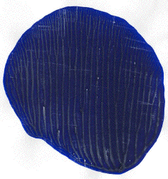

Next, experiment with reprocessing, replacing the paper in the same direction each time. Here we see the original and the result of three reprocessings. Click each picture for an enlargement in a new window.
|  |
The number of branches off the main branch are 4, 7, 11, and 15 for the original and the first three reprocessings.
The next five figures show the original picture and four reprocessings, each rotated 90 degress relative to the one before it. Click each picture for an enlargement in a new window.
Certainly, couting the number of branches is too difficult, and least by eye. Nevertheless, the visual complexity of the image increases even after the first reprocessing, and this trend seems to continue with successive reprocessings.
Return to Finger Paint Lab Sample.